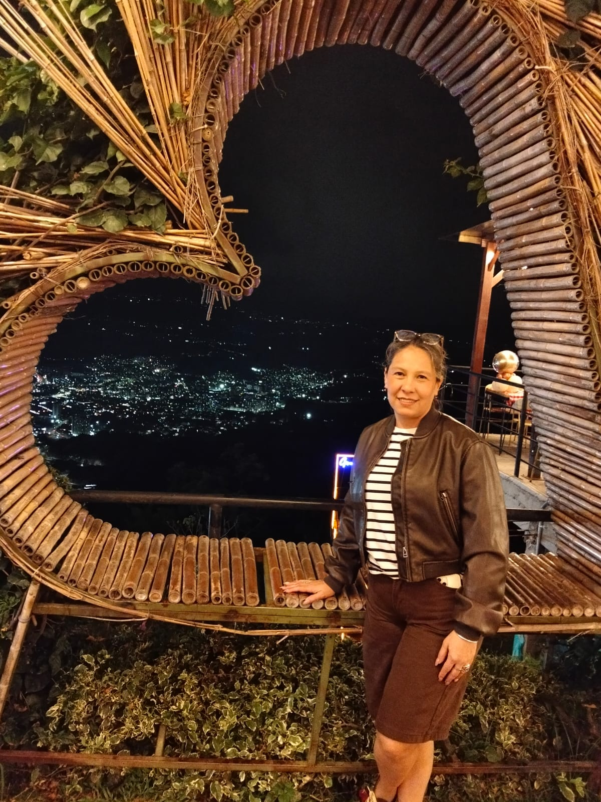

Ana Teresa Díaz Cárdenas · Nuestra luz infinita

Nuestro hogar, tu corazón
En el corazón de nuestro hogar, hay una fuerza invisible que lo mantiene todo unido. Eres tú, Ana. Has cultivado este jardín con una paciencia infinita y una ternura que no conoce límites. Junto a Giovanny, comenzaste a escribir una historia que hoy florece en cinco direcciones distintas, cada una con su propio color y aroma, pero todas compartiendo las mismas raíces profundas.
“Eres el nexo, la maestra y la amiga incondicional que toda familia sueña tener.”
“Rosy siempre dice que eres su brújula. En los momentos de duda, tu voz es la que le devuelve la calma y la claridad. Gracias por enseñarme que la verdadera fuerza nace de la bondad y por ser el ejemplo de mujer que aspiro a ser.”
“Para Gaby, eres la risa que ilumina los días nublados. Gracias por contagiarme tu alegría y por recordarme que, pase lo que pase, siempre habrá un motivo para sonreír si estamos juntas.”
“Meredith ve en ti una artista del alma. Gracias por creer en mis sueños antes de que yo misma lo hiciera. Tu apoyo es el lienzo sobre el cual pinto mi vida.”
“Maria encuentra en tu presencia su refugio de paz. Tu serenidad es mi puerto seguro, mamá. Gracias por escuchar mis silencios y por darme los consejos más sabios con solo una mirada.”
“Mamá, gracias por tus besos que curan todo y por hacerme sentir la niña más afortunada del mundo. Eres mi heroína de cuentos. Prometo llevar siempre conmigo todo lo que me has enseñado.”
“Gracias por elegirme para caminar a tu lado, por ser mi mejor amiga y la madre maravillosa que guía a nuestras hijas. Eres el sol de mi existencia.”
Las semillas se han convertido en árboles fuertes
El tiempo ha pasado, y las semillas que plantaste se han convertido en árboles fuertes. Has visto a tus hijas crecer, tropezar y levantarse, siempre estando ahí para ofrecerles tu mano. Cada paso que dan es un reflejo de los valores que sembraste en ellas con tanto esmero y dedicación.
Gracias, Mamá Ana, por ser nuestra luz.
Hoy te celebramos no solo por lo que haces, sino por lo que eres: una mujer extraordinaria que ha convertido una casa en un hogar y una familia en un equipo eterno. ¡Te queremos con todo nuestro corazón, hoy y siempre!